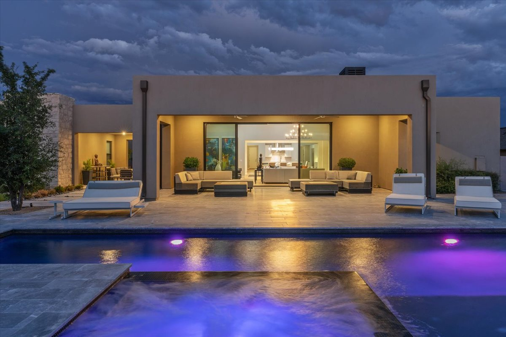

North Scottsdale, Arizona real estate
A golf-anchored, guard-gated stretch of desert bordering the McDowell Sonoran Preserve, with homes generally ranging from $400,000 at the entry level to $19 million or more in Silverleaf and Desert Mountain.
What is North Scottsdale known for?
North Scottsdale is known for golf-anchored communities, guard-gated estates, and direct access to the McDowell Sonoran Preserve's trail system, spread across a large stretch of desert north of central Scottsdale. The area combines golf corridors built around clubs like TPC Scottsdale, Troon North, and Desert Mountain with large tracts of protected Sonoran Desert along its northern and eastern edges.
That mix of golf, gated privacy, and preserved open desert is what sets North Scottsdale apart from other parts of the Scottsdale market. Development here ranges from established master-planned communities such as DC Ranch and Grayhawk to the higher-end guard-gated estate sections of Silverleaf and Desert Mountain.
North Scottsdale is also known for resort culture, country clubs, golf resorts, and steakhouse-driven dining that cluster around the same corridors as the area's gated subdivisions. Because the area spans a large amount of territory, its character shifts noticeably from one pocket to the next, from established golf neighborhoods closer to central Scottsdale to newer estate development pushing toward the Preserve.
What do homes cost in North Scottsdale?
Home prices in North Scottsdale generally span from about $400,000 at the entry level up to $19 million or more for the area's largest estates. Entry-level North Scottsdale product sits at the lower end of that range, while guard-gated estate lots within Silverleaf and Desert Mountain typically command the highest prices in the area.
Between those two extremes, pricing is shaped by which subdivision a property sits in, whether the community is guard-gated or open, lot size, golf-course frontage, and proximity to the McDowell Sonoran Preserve. A home along a Troon North fairway, for example, is priced against a different set of comparables than a similarly sized home in DC Ranch or Grayhawk.
Because North Scottsdale covers such a wide geography, pricing varies significantly by subdivision, lot size, golf-course frontage, and proximity to the Preserve. Buyers should compare recent sales within the specific subdivision they're considering rather than relying on a single average figure for the area as a whole.
What are North Scottsdale's notable subdivisions and gated communities?
North Scottsdale includes several distinct master-planned and gated communities, each with its own character. DC Ranch and Grayhawk are large, golf-anchored master-planned communities, with Grayhawk home to Isabella's Kitchen, one of the area's well-known restaurants. Troon North and Estancia are both organized around golf-course settings with guard-gated sections.
Silverleaf and Desert Mountain sit at the top of the North Scottsdale market, combining guard-gated estate privacy with golf-club access, and together anchor the high end of the area's $400,000 to $19 million-plus price range. TPC Scottsdale, home of the WM Phoenix Open, is also located within North Scottsdale and stands as one of the area's most recognized golf landmarks.
Each of these communities carries its own gate structure, architectural character, and price band, so a subdivision name alone does not tell the whole story. Comparing DC Ranch against Silverleaf, or Troon North against Desert Mountain, generally means comparing very different combinations of lot size, privacy level, and golf-course access rather than a single uniform product.
What are the lifestyle anchors in North Scottsdale?
Golf, guard-gated privacy, and direct trail access define daily life in North Scottsdale. The McDowell Sonoran Preserve's trail system is accessible from multiple points within the area, providing hiking access directly alongside its golf and gated communities.
TPC Scottsdale, host of the WM Phoenix Open, is among the area's most visible golf and event venues and reinforces the resort culture that runs through North Scottsdale's private clubs and resort properties. That resort culture extends beyond golf itself into the dining and hospitality that has grown up around the area's clubs and gated communities.
Dining options in and around North Scottsdale include Mastro's City Hall Steakhouse, Ocean 44, Etta, Volanti, Butters Pancakes & Cafe, and Dominick's Steakhouse, along with Isabella's Kitchen inside Grayhawk. Together with the area's golf clubs and resort amenities, these restaurants support the resort-oriented lifestyle that runs through much of North Scottsdale.
Between the Preserve's trail system on one side and the concentration of golf clubs and resort dining on the other, North Scottsdale offers both an outdoor-recreation anchor and a resort-oriented social scene within the same general area, without requiring a long drive between the two.
What should buyers know before purchasing in North Scottsdale?
Buyers should confirm HOA fees, gate access policies, and any golf-membership requirements specific to each subdivision, since these vary significantly between communities like DC Ranch, Grayhawk, Silverleaf, Desert Mountain, Troon North, and Estancia. Some gated communities tie club or golf membership to a home purchase, so buyers should confirm these terms directly with the subdivision or a local agent before making an offer.
Because North Scottsdale covers such a large geographic area, distance to the McDowell Sonoran Preserve, a specific golf course, or TPC Scottsdale can vary widely even within the same subdivision. Working with an agent familiar with the area's individual pockets helps narrow a search to the right combination of privacy, course access, and preserve proximity.
Buyers should also expect the gap between entry-level North Scottsdale product and the estate lots inside Silverleaf or Desert Mountain to be wide, both in price and in what the property actually includes: lot size, view corridors, and guard-gated versus open access all shift substantially across that range. Reviewing several subdivisions side by side, rather than treating North Scottsdale as a single uniform market, generally produces a clearer picture of what a given budget can secure.
What does North Scottsdale look like?
Frequently asked questions about North Scottsdale real estate
What is the average home price in North Scottsdale?
North Scottsdale homes generally range from about $400,000 at the entry level up to $19 million or more, with Silverleaf and Desert Mountain estates typically sitting at the highest end of that range.
What subdivisions are in North Scottsdale?
Notable North Scottsdale subdivisions and gated communities include DC Ranch, Grayhawk, Silverleaf, Desert Mountain, Troon North, and Estancia, each with its own mix of golf access and guard-gated privacy.
Is North Scottsdale a golf community?
North Scottsdale is home to numerous golf-anchored communities and clubs, including TPC Scottsdale, host of the WM Phoenix Open, along with golf-oriented subdivisions such as Troon North, Desert Mountain, and Estancia.
Can you hike in North Scottsdale?
Yes. The McDowell Sonoran Preserve borders much of North Scottsdale and its trail system is accessible directly from several points within the area, offering hiking access alongside the area's golf and gated communities.
What restaurants are near North Scottsdale?
Restaurants serving North Scottsdale include Mastro's City Hall Steakhouse, Ocean 44, Etta, Volanti, Butters Pancakes & Cafe, and Dominick's Steakhouse, along with Isabella's Kitchen inside Grayhawk.
Is Silverleaf part of North Scottsdale?
Yes. Silverleaf is a guard-gated subdivision within North Scottsdale and, along with Desert Mountain, typically anchors the highest end of the area's $400,000 to $19 million-plus price range.
Looking in North Scottsdale?
Kyara can walk you through current inventory, off-market opportunities, and what to expect subdivision by subdivision.